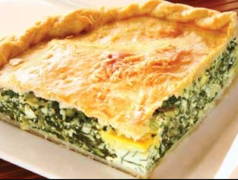
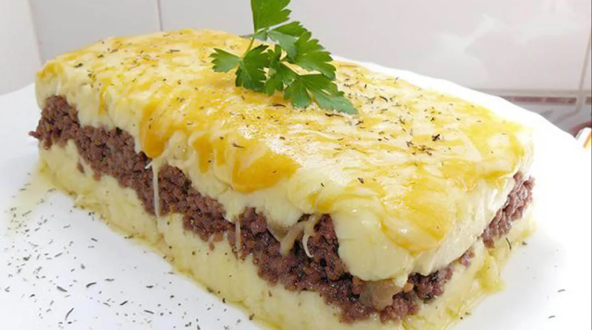
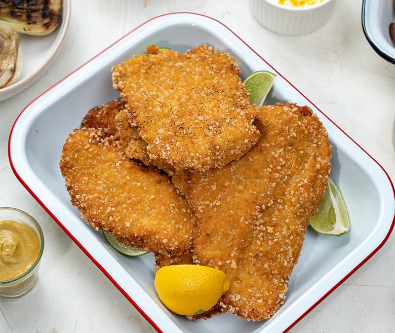
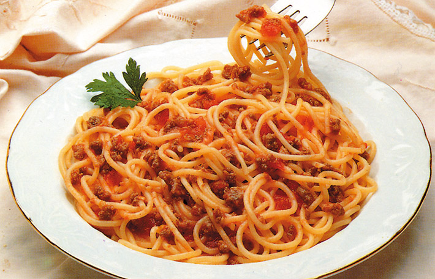
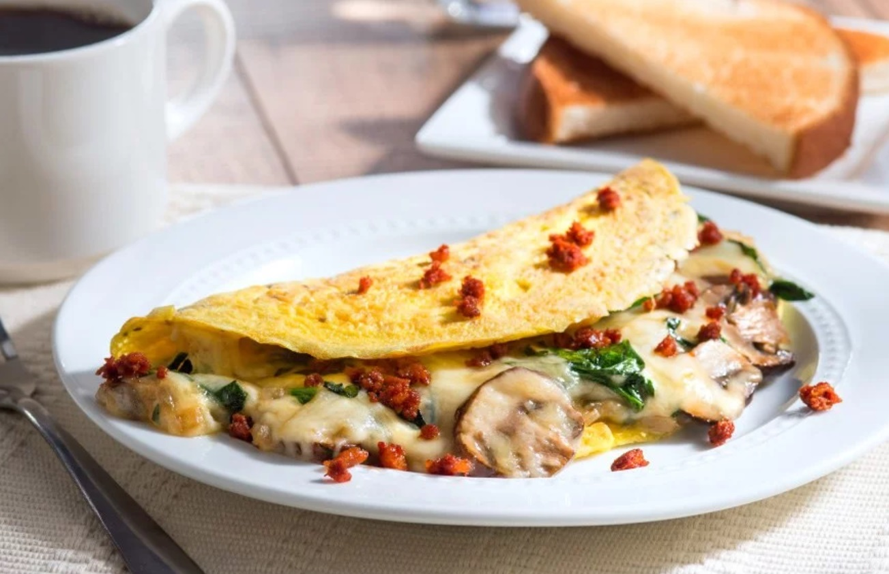

Tarta de Verdura
Una tarta casera con masa crocante y un relleno sabroso de acelga, cebolla salteada y queso derretido...

Pastel de Papas
Capas de puré cremoso y carne condimentada al horno. Ideal para un almuerzo familiar lleno de sabor.

Ensalada Mixta
Fresca combinación de lechuga, tomate, zanahoria y huevo con aderezo casero suave.

Milanesa Clásica
Rebozada y frita a punto, perfecta para servir con papas fritas o puré.
Empanadas Caseras
Con relleno jugoso de carne cortada a cuchillo y masa dorada al horno. Sabor tradicional argentino.

Fideos con Salsa
Spaghetti con salsa de tomate casera, albahaca fresca y un toque de queso rallado.
Sopa de Calabaza
Suave, cremosa y reconfortante. Perfecta para los días fríos. Servir con croutons o pan casero.

Omelette Relleno
Huevos batidos con relleno de queso y jamón. Rápido, nutritivo y muy versátil.